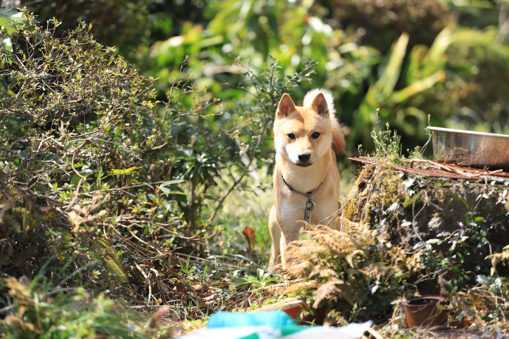

鳥取と島根に眠る、
知られざる逸品を物語とともに。
一度は姿を消しかけた希少な地犬「山陰柴犬」から始まった、私たちのブランド。
山陰には、全国的にはもちろん、地元の人でさえ十分に知らない文化や産品が数多く存在します。
私たちはそれらを見つけ、磨き、本物の価値としてあなたへお届けします。

何度も絶滅の危機を経験した山陰柴犬。
地域の人々による保存と繁殖の取り組みによって、その血統はいまも山陰で受け継がれています。
SAN-IN HIDDEN JAPANが最初に見つめたのも、この土地で守られてきた小さな日本犬でした。

江戸時代末期から続く鳥取の牛ノ戸焼。
1931年、民藝運動家・吉田璋也はこの窯の技術に着目し、地域の素材と職人の技を生かした新しい器づくりを始めました。
地域のいいものを商品として磨き、外へ届ける。その思想は今にもつながっています。

初夏から秋、鳥取の日本海には白いか漁の漁火が並びます。
地元で「白いか」と呼ばれるケンサキイカは、透き通る身と上品な甘みが魅力の、山陰を代表する夏の味覚。
味だけでなく、その海の風景まで山陰の物語です。